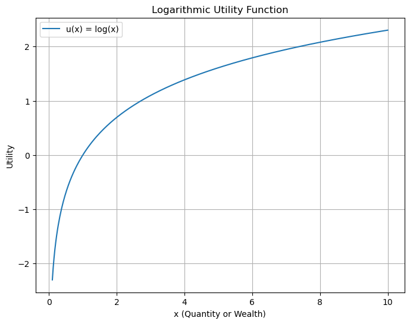

MNTF Mathematics for New Technologies in Finance
professor : Josef Teichmann
author : walkerchi
Approximation
Weierstrass
Weierstrass Approximation Theorem
A is dense in C(X,Rm)={fi∣fi∈Cpw0,fi∈X→Rm,X⊂Rn} if
- A contains all polynomial functions: P⊂A
- A is vector subspace of C : $A\subset C(\mathcal X,\R^m)\quad $
- f1(x)+f2(x)=f3(x)∀f1,f2∈A,∃f3∈A
- cf1(x)=f2(x)∀c∈R,∀f1∈A,∃f2∈A
- A is closed under multiplication : f1(x)f2(x)=f3(x)∀f1,f2∈A,∃f3∈A
- A contains constant function : f(v)=c∀v∈X,∃f∈A
- points seperation : f(v)\neq f(w)\quad \forall v\neq w\and v,w\in\mathcal X
for shallow NN with ReLU
- [ ] contains all polynomial functions
- [ ] vector space
- [ ] closed under multiplication
- [x] contains constant function
- [x] points seperation
⇒ NN with ReLU is dense in C(X,Rm)
Faber-Schauder
Faber-Schauder basis : sn,k=21+2n∫0tψn,k(u)dun,k∈Z
v=n=0∑∞αnbn∀v∈R,∃αn∈R,∃bn∈{s∗,∗}
- equivalent to the linear combination of ReLU
Haar function : ψn,k(t)=2n/2ψ(2nt−k)n,k∈Zψ(t)=⎩⎨⎧1−10t∈[0,21)t∈[21,1)otherwise
- supp(ψn,k)=[k2−n,(k+1)2−n)
- ∫Rψn,k(t)dt=0
- ∥ψn,k∥L2(R)=1
- ∫Rψn1,k1ψn2,k2dt=δn1n2δk1k2
Banach
A is Banach space if :
- Cauchy sequence : ∥fm−fn∥≤ϵ∀ϵ>0,∃Nϵ∈N,∀m,n>Nϵ
- completeness : ∥f−fm∥≤ϵ∀ϵ>0,m→∞
Signature
for path/curve Xt∈Rd, Xt=[X1(t)X2(t)⋯Xd(t)]⊤ , signature could determine the curve in tree like equivalences
n-th level of signature : S(X)a,bi1,i2,⋯,in=∫ab∫atn−1⋯∫at2dXt1i1⋯dXtninn≤d
- S(X)a,bi1,i2,⋯,in∈Rn⊗d, it’s a d dimension tensor with each dimension of span n
signature : S(X)a,b=(1,S(X)a,bi1,S(X)a,bi1,i2,⋯,S(X)a,bi1,i2,⋯,id)
- the maximum length of S(X)a,b is d0+d1+d2+⋯+dd=d−1dd+1−1
- the length of depth M is d0+⋯+dM=d−1dM+1−1
normally we got : Xai denotes i-th component at time a of vector of function X
-
S(X)a,bi=∫abdX=Xbi−Xai
-
S(X)a,bi,j=∫ab∫at2dXt1idXt2j=∫ab(Xt2i−Xai)dXt2j=X=αt+β21(Xbi−Xai)(Xbj−Xaj)
-
S(X)a,bi,j,k=∫ab∫at3∫at2dXt1idXt2jdXt3k=X=αt+β61(Xbi−Xai)(Xbj−Xaj)(Xbk−Xak)
-
shuffle product rule : S(X)a,bIS(X)a,bJ=K=shuff([I1,⋯,J1,⋯])∑S(X)a,bK
- example : S(X)a,b1S(X)a,b2=S(X)a,b1,2+S(X)a,b2,1
Financial Market
Notation
- Sti : i-th asset prices at time t, S∈RN×d+1, normally S0 represent bank account
- ϕti : holdings/strategy in i-th assets at time t
- Vt : value of portfolio at time t , Vt=∑iϕtiSti
self-financing : dV(t)=∑i=1nϕi(t)dSi(t)
- ∑iϕt+1iSti=∑iϕtiSti∀t∈[0,N)
value process : Vt+1−Vt=∑iϕti(St+1i−Sti)∀t∈[0,N)
martingale : E[Xn+1∣X1,…,Xn]=Xn
arbitrage : no risk of losing moneyP(Vt≥0)=1∧portfolio value > 0P(Vt=0)>0t∈(0,T),requires no initial valueV0=0
Stochastic Differential Equation
Brownian motion/Wiener process : Wt+1−Wt∼N(0,1)W0=0→Wt
Geometric Brownian motion : dSt=μ St dt+σ St dWt⇔St=S0e(μ−2σ2)t+σWt
- Wt is brownian motion/wiener process
- μ,σ is the expectation/variance for the GBM
Utility
utility function u : the additional utility or satisfaction from consuming one more unit of a good decreases as more of the good is consumed.
- concave : f′′(x)<0
- monotone increase : f′(x)>0

expected utility optimization problem : ϕtiargmax E[u(VN)]
Local Volatility Model : dSt=rStdt+σ(St,t)StdWt
-
St : underlying asset price at time t
-
r risk-free interesting rate
-
σ(St,t) : local volatility function
-
Wt is the Brownian motion/ Wiener process
Local Stochastic volatility model : dStdνt=μStdt+νtStdWt=αt(ν)dt+βt(ν)dWt′
- αt(ν),βt(ν) : functions based on ν
- Wt,Wt′ : Wiener process with correlation factor ρ
- νt : model the variance of St, it relies on another stochastic process, so LSV is not a standard SDE
Heston model : dνt=κ(θ−νt)dt+ξνtdWt′
-
θ : long term variance
-
κ : rate of variance reverts toward it’s long term
-
ξ : volatility of volatility, the variance of νt
-
ambitious approach
- modeling θ,κ,ξ,ρ,μ where ρ is the correlation between Wt,Wt′
-
modest approach
- modeling θ,κ,ξ , and ρ,μ from emperical
Ito’s lemma : df(S,t)=(∂t∂f+μ∂S∂f+21σ2∂S2∂2f)dt+σ∂S∂fdWtStochastic Differential EquationdS(t)=μdt+σdWt
Black Scholes equation : ∂t∂C+rK∂K∂C+21σ2K2∂K2∂2C−rC=0 : derive from Ito’s lemma
- C(K,t) : European call option price, equivalent to value V
- K : strike price, equivalent to assets/stock price S
Dupire’s formula : −∂T∂C−rK∂K∂C+21σ2K2∂K2∂2C−ΔC=0
- when r=0 , σ2=K2∂K2C2∂TC
Breeden-Litzenberger fromula : ∂K2C(T,K)dK=pT(K)dK
- pT(K)dK is the risk neural probability, pT(K)=p(St∈[K,K+dK])
Deep portfolio optimization
dSt=Stμdt+StσdWtdXt=αtXtStdSt+(1−α)Xtrdtαmax E[u(XT)]
- Xt is the money at time t
- αt is strategy how much portion of money in the stock rather than in the bank at time t
- St is the stocks prices, governed by parameter μ and σ , with Wt a brownian motion or wiener process
- r is the interest rate saved in bank
- u is the utility function ,normally u(x)=γxγ−1
analytical solution : α∗=σ2(1−γ)μ−r
Deep Hedging
dSt=Stμdt+StσdWtH,πmin Ef(ST)−π−∫0THtdSt2
- St is the risky stocks prices, governed by parameter μ and σ , with Wt a brownian motion or wiener process
- f(St) is financial claim, the payoff is f(ST)=max(ST−K,0) for European call, K is the strike price
- π the price of the option, the upfront payment you received
- Ht is the hedge strategy at time t
- T is the expire date
Deep Calibration
Heston Calibration
dXt=((q−r)−21Yt)dt+YtdWt1dYt=(θ−κYt)dt+σYtdWt2θ,κ,σargmint=0∑T∥Xt−log(St)∥2
- r : interest rate
- q : dividend
- St : price of assets
- Xt : predicted log price : X0=log(S0)
- Yt : variance of Heston model : Y0=ν0
Utility Calibration
dSt=Stαtl(t,St)dWtlargminE[max(ST−K,0)−C(K,T)−∫0THtdSt]2
- αt is exogenous process at time
- l(t,St) is leverage function
- St is the stocks prices, with Wt a brownian motion or wiener process
- Ht is the hedge strategy at time t
- K is the strike price of European call
- C is the European call option market price
Deep Simulation
model controlled differential equation
dXt=i=0∑dσ(AiXt+bi)dui(t)
- Ai,bi are randomly generated matrices/vectors
- ui is control coefficient learned by network
- σ is the sigmoid//tanh function
Reinforcement Learning
- a,s : action a∈A, state s∈S
- V,V∗ : value function, optimal value function, V∈S×T→R
- π(s) : policy , π∈S→A
- c(t,s,a) : cost function , c∈T×S×A→R
- r,R(s,a) : reward, reward function , r∈R,R∈S×A→R
- Q(s,a) ：Q/state action function, return the priority for each state and action, Q∈S×A→R
[DPP] Dynamic programming principle : V∗(t,s)=amax{∫tTc(τ,s(τ),a(τ))dτ+V∗(T,s(T))}
- V(s)=amax(R(s,a)+γs′∈S∑P(s′∣s,a)V(s′))
[HJB] Hamiton-Jacobi-Bellman equation : ∂t∂V(s,t)+amax(∂s∂V(s,t)⋅f(t,s,a)+c(t,s,a))=0
- f(t,s,a) : system dynamics, how state change over time, dtds(t)=f(t,s,a)
- V∗(s)=a∈Amax(R(s,a)+γs′∈S∑P(s′∣s,a)V∗(s′))
Bellman equation : Q(s,a)=r+γ a′max Q(s′,a′)
Value Iteration : V(n+1)=amax{R(s,a)+γ∑s′P(s′∣s,a)V(n)(s′)}
Policy Iteration : Vπ(n)(s)π(n+1)=R(s,π(s))+γs′∑P(s′∣s,π(s))Vπ(n)(s′)=πargmax{R(s,a)+γs′∑P(s′∣s,a)Vπ(n)(s′)}
Q learning(environment-known/model-based) : Q(s,a)←R(s,a)+∑s′P(s′∣s,a)[γ a′max Q(s′,a′)]
Q learning(environment-unknown/model-free) : Q(s,a)←(1−α)Q(s,a)+α[r+γ a′max Q(s′,a′)−Q(s,a)]
Optimization
inverse calibration : θargmin∥d−NNθ∥2
- d is the observed data
- NNθθ∈Θ is the pool of the model
optimization approach : θargmin∥d−NNθ∥2+λRθ
- θ model parameters
- Rθ : regularization term (∣⋅∣ : lasso(L1) or ∥⋅∥2 : ridge(L2))
bayesian optimization :
P(Mi∣d)=P(d)P(d∣Mi)P(Mi)∝P(d∣Mi)P(Mi)
- P(Mi∣d) posterior probability of model Mi given data d
- P(d∣Mi) likelihood of data given model Mi
- P(Mi) : prior probability of model Mi
- P(d) : evidence likelihood
for linear model Y∼N(θX,σ2I),θ∼N(0,τ2I), the maximizing posterior of p(θ∣x,y) is ridge regression:
θargmax p(θ∣x,y)∝θargmax p(θ)p(y∣x,θ)∝θargmax exp(−θ⊤Iθ/τ2) exp(−(y−θx)⊤I(y−θx)/σ2)∝θargmin τ2σ2∥θ∥2+∥y−θx∥2
[SGLD] Stochastic Gradient Langevin Dynamics : gradient descent plus noise :
dθt=21∇log p(θt∣x1,…,xn)dt+dWt
- escape from local minimal